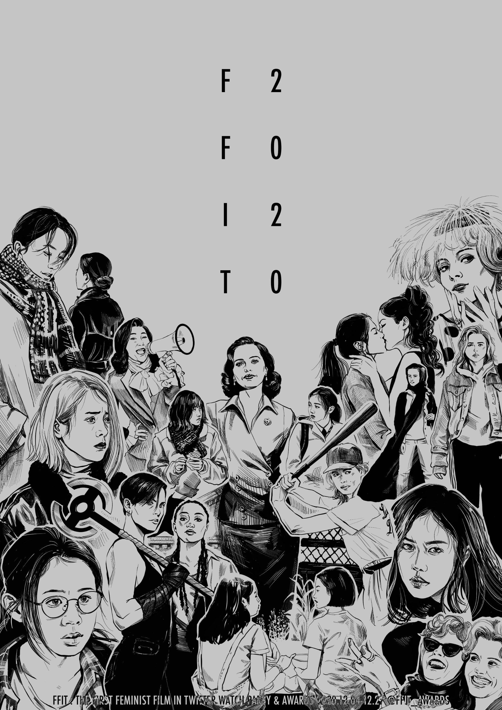
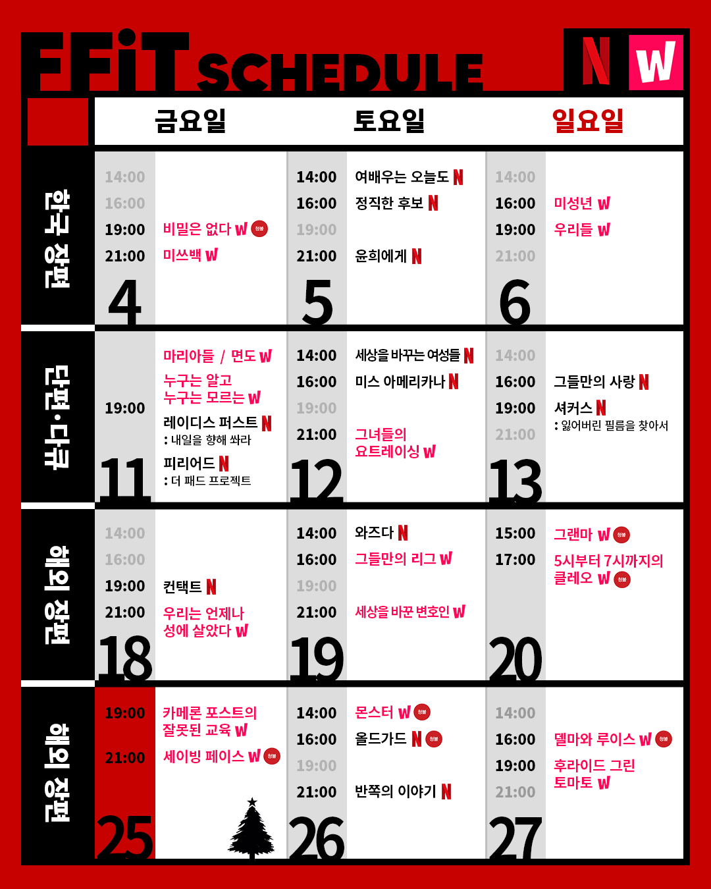

우리가 사랑하고, 우리를 사랑하는 영화제 여성 영화 트위터 영화제 & 시상식 FFIT(Feminist Film in Twitter)는 2020년 12월 4일부터 6일까지 3일간 크롬 확장프로그램(넷플릭스 파티/왓챠 파티)을 통해 넷플릭스와 왓챠에서 서비스하는 여성 주연 영화를 공동 관람하는 온라인 영화제이다.
여성 영화 트위터 영화제 및 시상식을 열어보려고 합니다. 영화제는 왓챠 파티 기능을 이용해 12월쯤에 열고, 모든 작품 시청을 마친 뒤 투표를 통해 시상할 작품을 결정하여 1월에 시상식을 열 예정입니다. 시상 부문으로는 대상, 감독상, 각본상, 촬영상, 음악상, 주연상, 조연상 등을 생각 중입니다.
영화제 시청 영화이자 시상식 경쟁작이 될 영화들은 여러분의 추천으로 선정할 겁니다. 필수 조건은 여성 주연입니다. 추가 고려 요소는 1.여성 감독 2.여성 각본 3.영화의 여성주의적 메시지입니다. 그러므로 당연히 배우 시상은 여자 배우에게만 할 겁니다.링크

영화제 입장시 아래와 같은 준비가 필요하다. 넷플릭스/왓챠 파티 확장프로그램 사용 설명

영화관에 가지 않고도 '여성 서사' 영화 실컷 볼 수 있는 온라인 영화제가 열렸다(2020.12.03)
여성서사에 목마른 사람, 온라인 영화제로 모여라!(2020.12.03)